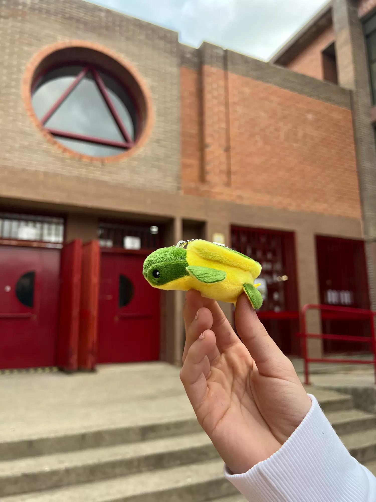

closcaverda.org
Fundació dedicada a la conservació de les tortugues marines i
la preservació dels seus hàbitats naturals.
COMPROMISOS
El nostre compromís amb la fundació CRAM

Donació Íntegra de Beneficis
Ens comprometem a donar el 100% dels beneficis obtinguts de la venda de les nostres polseres i clauers a la Fundació CRAM. Creiem que, a través d'aquest gest, podem contribuir de manera significativa a la conservació del medi marí i recolzar en la recuperació d'espècies en perill.
Conscienciació i Educació
A més del nostre suport econòmic, ens comprometem a utilitzar les nostres plataformes i esdeveniments per a difondre informació rellevant sobre la preservació del medi marí, les espècies en risc i el treball vital que realitza la Fundació CRAM. Busquem educar i sensibilitzar a la nostra comunitat sobre la importància de protegir els nostres oceans.
Participació Activa
Ens comprometem a participar activament en les iniciatives i esdeveniments organitzats per la Fundació CRAM, fomentant la integració de la nostra comunitat en aquestes activitats. Creiem que la participació directa és clau per a fomentar un canvi real i durador en la conservació del medi marí.
Innovació en Pro de la Conservació
Ens comprometem a explorar i desenvolupar noves formes de suport a la Fundació CRAM, que puguin incloure des de la creació de productes exclusius en col·laboració amb artistes i dissenyadors, fins a la implementació de tecnologies netes i sostenibles en la nostra producció. Aquest enfocament innovador no sols augmenta el finançament disponible per a la conservació marina, sinó que també promou pràctiques empresarials responsables.Els nostres productes

Polseres marines
Polseres de qualitat amb un disseny únic. Fets a mà amb amor per promoure la conservació de les tortugues.
Peluixos amb casc
Peluixos amb casc en format clauer per als amants de les tortugues marines i les aventures emocionants.

Peluixos
Adorables peluixos en format clauer, perfectes per acompanyar-te a tot arreu i protegir les tortugues marines.
AJUDAN's
Com ens pots ajudar?
Com pots ajudar a la fundació closcaverda.org.
Fes una Donació
Aporta un donatiu per ajudar-nos a protegir les tortugues
marines i els seus hàbitats. Tota contribució és
important.
Compra de productes
Explora la nostra increïble selecció de productes, fets
amb amor i compromís per a la conservació de les tortugues
marines. Trobaràs polseres úniques, adorables peluixos de
clauer i molt més. Cada compra que realitzis contribueix
directament a la protecció d'aquestes espècies.
Difusió
Ajuda'ns a difondre la importància de la conservació
marina i la protecció de les tortugues marines a través de
les xarxes socials i altres mitjans. Recorda mencionar-nos
perquè puguem veure el teu gran treball!
FAQ
Preguntes Comunes
Aquestes són algunes de les preguntes més habituals que rebem
Quins productes comercialitza la fundació?
La fundació ven una varietat de productes, incloent
polseres i clauers.
Com ajuden els beneficis de les vendes a salvar les
tortugues marines?
Tots els beneficis de les vendes es destinen a finançar
projectes de conservació, donar suport als esforços de
recerca i implementar iniciatives per protegir les
tortugues marines i els seus hàbitats.
Puc fer una donació en comptes de comprar un producte?
Sí, pots optar per fer una donació directa a la fundació
si prefereixes no comprar un producte. La teva donació
encara contribuirà a salvar les tortugues marines.
Els productes estan fets de materials sostenibles?
Sí, la fundació està compromesa amb la sostenibilitat. Els
productes estan fabricats amb materials ecològics com el
plàstic reciclat i components biodegradables.
Veneu els vostres productes a través d'internet?
No, dona't el nostre limitat estoc, només podem fer
reserves en línia i garantir la compra per la seva
recollida en el centre: Miquel Martí i Pol de Cornellà de
Llobregat.
Contacta amb nosaltres